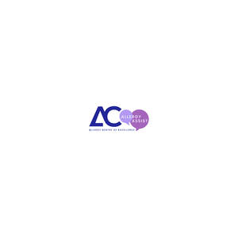

Trade Mark Journal No.2025/011 14 March 2025
UK00004168609 11 March 2025 (5,35,38,41,44)
Mark 1

Mark 2
- Class 5
- Allergy medication; Allergy medications; Allergy capsules; Allergy relief medication; Nasal drops for the treatment of allergies; Nasal spray for the treatment of allergies; Pharmaceutical preparations for the prevention of allergies; Injectable pharmaceuticals for treatment of anaphylactic reactions; Pharmaceutical preparations for treating allergies; Asthma treatment preparations; Preparations for the treatment of asthma; Pharmaceutical preparations for treating asthma; Inhaled pharmaceutical preparations for the treatment of respiratory diseases and disorders; Medicated creams for treating dermatological conditions.
- Class 35
- Administrative services relating to the referral of patients; Administration of membership schemes; Advertising services to promote public awareness of medical issues.
- Class 38
- Videoconferencing services; Teleconferencing services; Provision of video conferencing services; Teleconferencing and video conferencing services; Provision of private mobile radio services.
- Class 41
- Educational services in the healthcare sector; Educational and training services relating to healthcare; Medical education services; Educational services; Educational and teaching services; Educational information; Development of educational materials; Educational assessment services; Health education; Physical health education; Education services relating to health; Health and wellness training; Provision of educational services relating to health; Conducting educational support programmes for healthcare professionals.
- Class 44
- Telemedicine services; Healthcare; Medical and healthcare clinics; Healthcare services; Mobile medical clinic services; Outpatient and inpatient care services; Health-care; Health-care services; Physician services; Health clinic services [medical]; Medical tele-reporting [medical services]; Pediatric nursing services; Medical nursing services; Nursing services (Medical -); Remote monitoring of medical data for medical diagnosis and treatment; Health clinic services; Medical clinic services; Clinic (Medical -) services; Healthcare consultancy services; Medical diagnostic services; Health care consultancy services [medical]; Provision of medical services; Healthcare advisory services; Healthcare information services; Medical treatment services provided by clinics and hospitals; Provision of health care services; Medical care services; Medical consultations; Medical screening services in the field of asthma; Medical services; Clinics (Medical -); Medical clinics; Medical nursing; Nursing, medical; Health care services offered through a network of health care providers on a contract basis; Nursing care (Provision of -); Provision of nursing care; Health screening services in the field of asthma; Medical evaluation services; Nursing care services; Services for the provision of medical care information; Medical care and analysis services relating to patient treatment; Hospital services; Providing medical information in the healthcare sector; Provision of medical treatment; Nursing services; Medical treatment services; Medical consultation.
Food Allergy Immunotherapy Limited